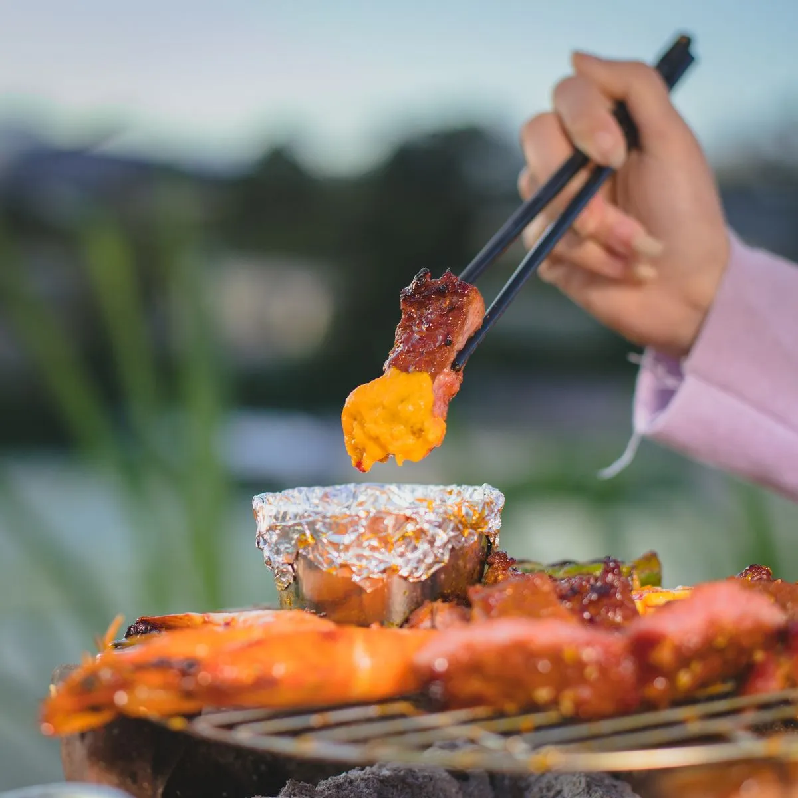
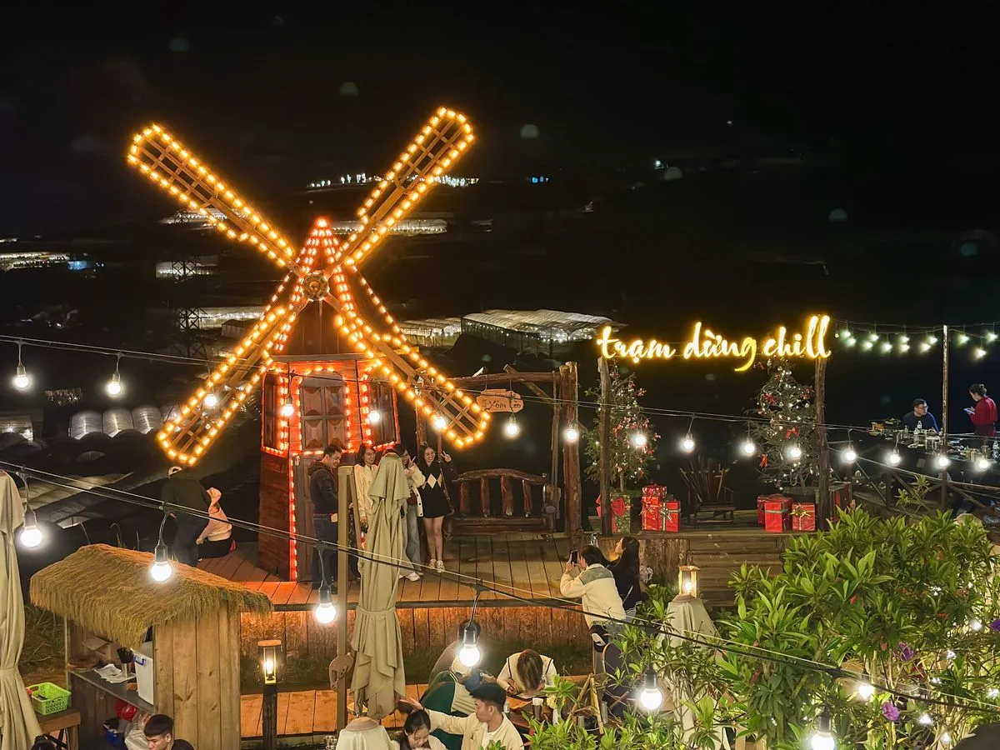

Lẩu nướng — Combo hoàn hảo cho Đà Lạt mùa lạnh
Khi nhiệt độ Đà Lạt xuống 15-18°C, không gì tuyệt vời hơn ngồi ngoài trời với nồi lẩu nóng bốc khói một bên và bếp nướng than hồng một bên. Combo lẩu nướng Đà Lạt vừa ấm bụng, vừa thỏa mãn cả hai "phe" — phe thích nướng và phe thích lẩu!
5 Combo lẩu nướng đáng thử nhất
Combo 1 — Lẩu thái + nướng hải sản: Nước lẩu tom yum chua cay ấm bụng, kết hợp tôm, mực, sò nướng than hoa. Set cho 2 người từ 280K.
Combo 2 — Lẩu nấm + nướng bò Mỹ: Lẩu nấm thanh ngọt cho ai không ăn cay, bò Mỹ nướng medium rare mềm tan. Set cho 2 người từ 350K.
Combo 3 — Lẩu gà lá é + nướng ba chỉ: Đặc sản Đà Lạt! Gà thả vườn nấu lẩu lá é thơm phức, ba chỉ heo nướng giòn rụm. Set cho 4 người từ 450K.
Combo 4 — Lẩu bò nhúng giấm + nướng combo: Lẩu bò nhúng giấm chua nhẹ, kết hợp set nướng tổng hợp (bò, gà, xúc xích). Set cho 4 người từ 500K.

Combo 5 — Lẩu Kim Chi + nướng Hàn Quốc: Cho fan K-food — lẩu Kim Chi đậm vị, thịt nướng kiểu Hàn kèm banchan. Set cho 2 người từ 300K.
Ở đâu ăn lẩu nướng view đẹp nhất?
Tại Trạm Dừng Chill, bạn được ăn lẩu nướng Đà Lạt với view sương mù phủ thung lũng, đèn nhà lồng lấp lánh xuyên sương. Menu có đầy đủ combo lẩu + nướng từ 95K/người, phục vụ nhóm 2-20 người.

Mẹo ăn lẩu nướng Đà Lạt
Gọi lẩu trước để nước sôi, trong lúc chờ thì nướng đồ ăn. Uống trà gừng nóng hoặc rượu vang ấm kèm theo — ấm bụng gấp đôi! Mang khăn lau vì ăn nướng + lẩu sẽ dính mùi — nhưng đó là "mùi hương kỷ niệm" của Đà Lạt!
Kết luận
Lẩu nướng Đà Lạt mùa lạnh = công thức ấm bụng + ấm lòng hoàn hảo. Ghé Trạm Dừng Chill để thưởng thức combo lẩu nướng giữa view sương mù lung linh!